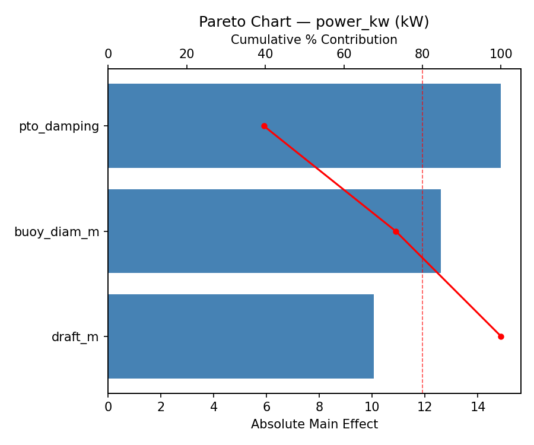
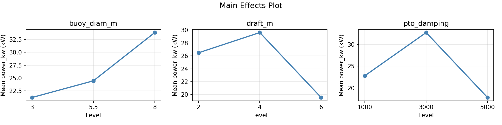
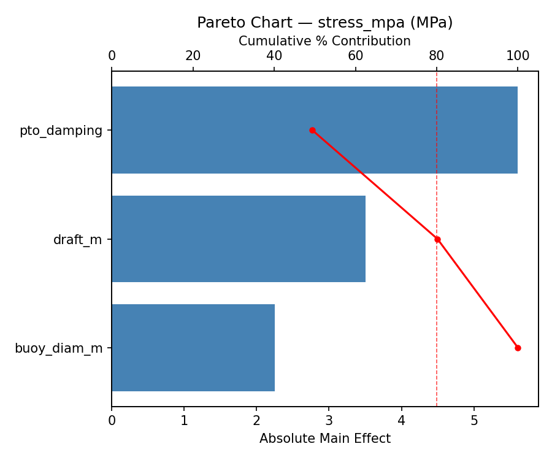
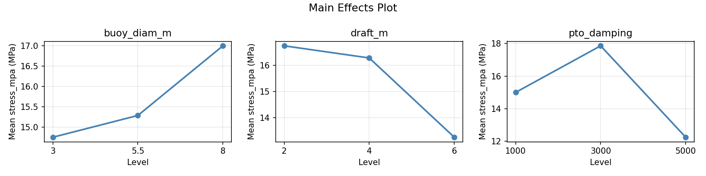
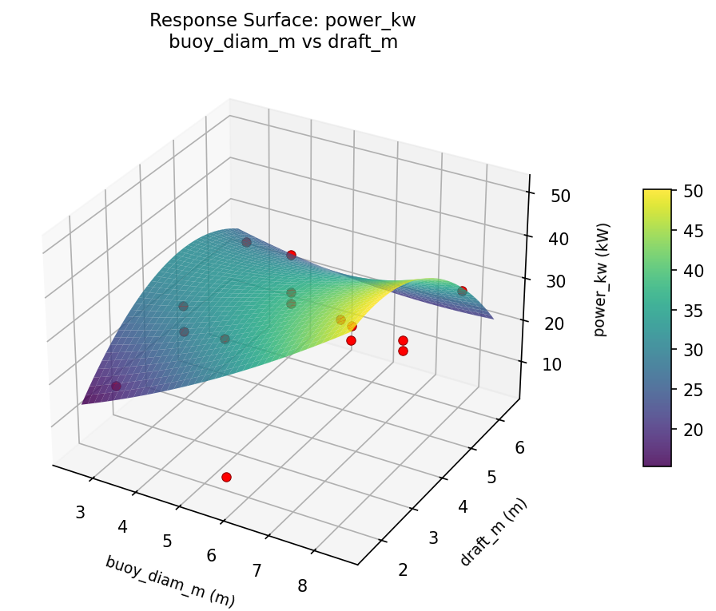
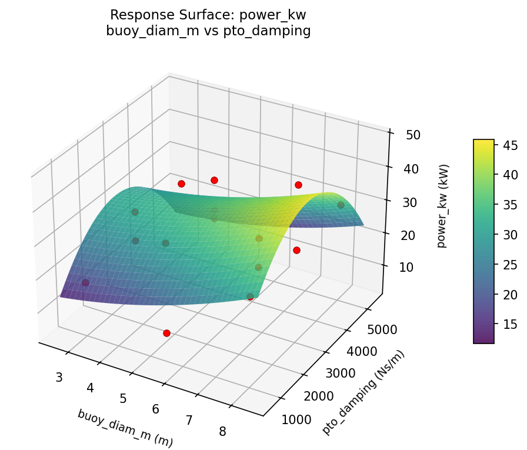
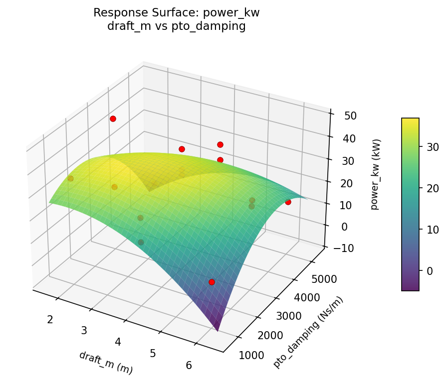
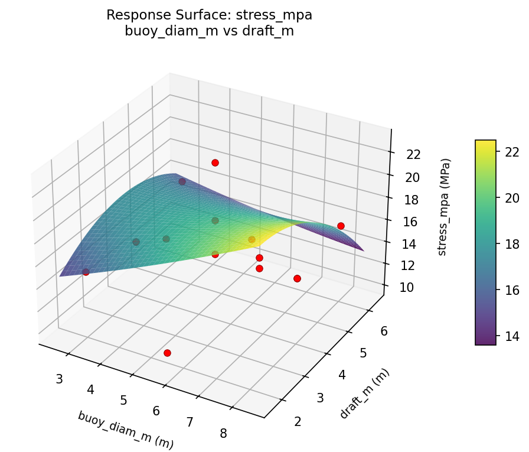
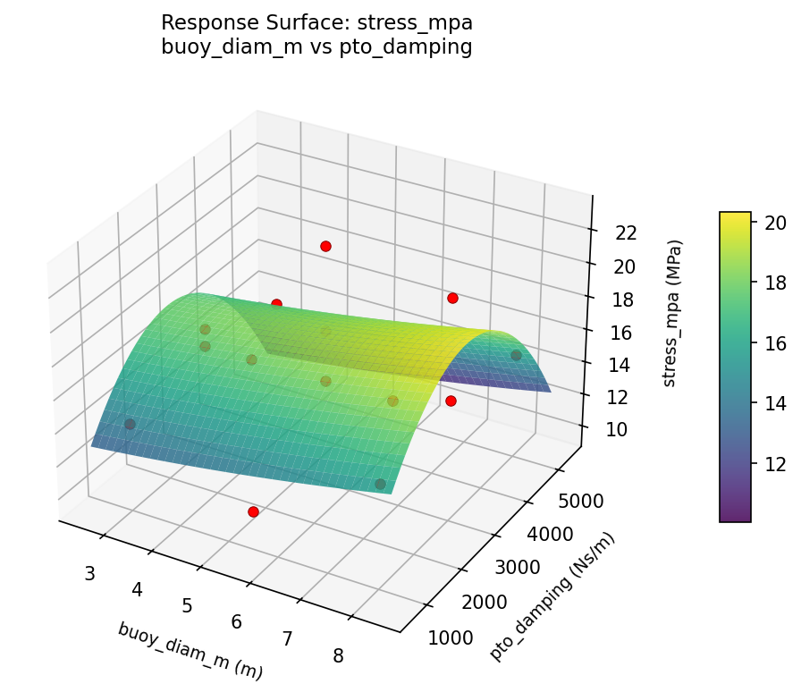
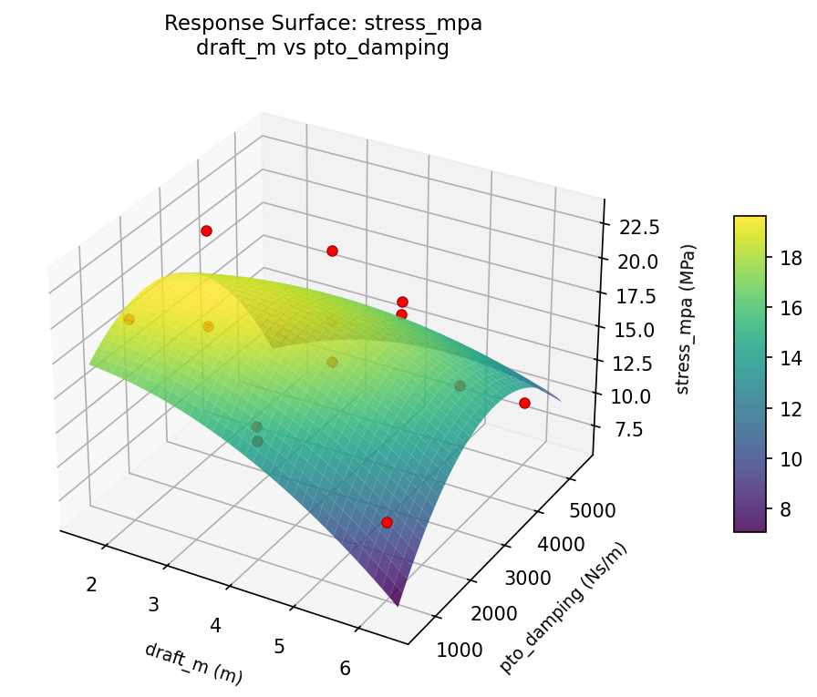

Summary
This experiment investigates wave energy converter tuning. Box-Behnken design to maximize power capture and minimize mechanical stress by tuning buoy diameter, draft depth, and PTO damping.
The design varies 3 factors: buoy diam m (m), ranging from 3 to 8, draft m (m), ranging from 2 to 6, and pto damping (Ns/m), ranging from 1000 to 5000. The goal is to optimize 2 responses: power kw (kW) (maximize) and stress mpa (MPa) (minimize). Fixed conditions held constant across all runs include wave height = 1.5m, wave period = 8s.
A Box-Behnken design was chosen because it efficiently fits quadratic models with 3 continuous factors while avoiding extreme corner combinations — requiring only 15 runs instead of the 8 needed for a full factorial at two levels.
Quadratic response surface models were fitted to capture potential curvature and factor interactions. The RSM contour plots below visualize how pairs of factors jointly affect each response.
Key Findings
For power kw, the most influential factors were pto damping (39.6%), buoy diam m (33.6%), draft m (26.8%). The best observed value was 47.9 (at buoy diam m = 5.5, draft m = 4, pto damping = 3000).
For stress mpa, the most influential factors were pto damping (49.4%), draft m (30.8%), buoy diam m (19.8%). The best observed value was 10.0 (at buoy diam m = 3, draft m = 2, pto damping = 3000).
Recommended Next Steps
- Run confirmation experiments at the predicted optimal settings to validate the model.
- Consider whether any fixed factors should be varied in a future study.
Experimental Setup
Factors
| Factor | Low | High | Unit |
|---|
buoy_diam_m | 3 | 8 | m |
draft_m | 2 | 6 | m |
pto_damping | 1000 | 5000 | Ns/m |
Fixed: wave_height = 1.5m, wave_period = 8s
Responses
| Response | Direction | Unit |
|---|
power_kw | ↑ maximize | kW |
stress_mpa | ↓ minimize | MPa |
Configuration
{
"metadata": {
"name": "Wave Energy Converter Tuning",
"description": "Box-Behnken design to maximize power capture and minimize mechanical stress by tuning buoy diameter, draft depth, and PTO damping"
},
"factors": [
{
"name": "buoy_diam_m",
"levels": [
"3",
"8"
],
"type": "continuous",
"unit": "m"
},
{
"name": "draft_m",
"levels": [
"2",
"6"
],
"type": "continuous",
"unit": "m"
},
{
"name": "pto_damping",
"levels": [
"1000",
"5000"
],
"type": "continuous",
"unit": "Ns/m"
}
],
"fixed_factors": {
"wave_height": "1.5m",
"wave_period": "8s"
},
"responses": [
{
"name": "power_kw",
"optimize": "maximize",
"unit": "kW"
},
{
"name": "stress_mpa",
"optimize": "minimize",
"unit": "MPa"
}
],
"settings": {
"operation": "box_behnken",
"test_script": "use_cases/255_wave_energy_buoy/sim.sh"
}
}
Experimental Matrix
The Box-Behnken Design produces 15 runs. Each row is one experiment with specific factor settings.
| Run | buoy_diam_m | draft_m | pto_damping |
|---|
| 1 | 5.5 | 2 | 1000 |
| 2 | 5.5 | 4 | 3000 |
| 3 | 8 | 4 | 5000 |
| 4 | 8 | 4 | 1000 |
| 5 | 5.5 | 4 | 3000 |
| 6 | 5.5 | 4 | 3000 |
| 7 | 3 | 4 | 5000 |
| 8 | 8 | 2 | 3000 |
| 9 | 5.5 | 2 | 5000 |
| 10 | 8 | 6 | 3000 |
| 11 | 3 | 4 | 1000 |
| 12 | 5.5 | 6 | 5000 |
| 13 | 3 | 2 | 3000 |
| 14 | 3 | 6 | 3000 |
| 15 | 5.5 | 6 | 1000 |
Step-by-Step Workflow
1
Preview the design
$ python doe.py info --config use_cases/255_wave_energy_buoy/config.json
2
Generate the runner script
$ python doe.py generate --config use_cases/255_wave_energy_buoy/config.json \
--output use_cases/255_wave_energy_buoy/results/run.sh --seed 42
3
Execute the experiments
$ bash use_cases/255_wave_energy_buoy/results/run.sh
4
Analyze results
$ python doe.py analyze --config use_cases/255_wave_energy_buoy/config.json
5
Get optimization recommendations
$ python doe.py optimize --config use_cases/255_wave_energy_buoy/config.json
6
Generate the HTML report
$ python doe.py report --config use_cases/255_wave_energy_buoy/config.json \
--output use_cases/255_wave_energy_buoy/results/report.html
Real-World Experiment Workflow
ℹ
Physical Marine & Environmental Test? Use the Manual Workflow
Marine experiments involve real water conditions, living organisms, and environmental factors that require field testing. The simulation script above is for demonstration. For your real experiments, use record, status, and export-worksheet.
$ python doe.py export-worksheet --config use_cases/255_wave_energy_buoy/config.json \
--format csv --output worksheet.csv
$ python doe.py status --config use_cases/255_wave_energy_buoy/config.json
$ python doe.py record --config use_cases/255_wave_energy_buoy/config.json --run 1
$ python doe.py analyze --config use_cases/255_wave_energy_buoy/config.json --partial
$ python doe.py analyze --config use_cases/255_wave_energy_buoy/config.json
$ python doe.py optimize --config use_cases/255_wave_energy_buoy/config.json
$ python doe.py report --config use_cases/255_wave_energy_buoy/config.json \
--output report.html
✔
Works Without a Test Script
The analysis pipeline doesn't care how results were produced. Record your measurements with record, and the full analysis, optimization, and reporting pipeline works identically. Use --partial to get early insights before all runs are complete.
Features Exercised
| Feature | Value |
|---|
| Design type | box_behnken |
| Factor types | continuous (all 3) |
| Arg style | double-dash |
| Responses | 2 (power_kw ↑, stress_mpa ↓) |
| Total runs | 15 |
Analysis Results
Generated from actual experiment runs using the DOE Helper Tool.
Response: power_kw
Top factors: pto_damping (39.6%), buoy_diam_m (33.6%), draft_m (26.8%).
Pareto Chart

Main Effects Plot

Response: stress_mpa
Top factors: pto_damping (49.4%), draft_m (30.8%), buoy_diam_m (19.8%).
Pareto Chart

Main Effects Plot

Response Surface Plots
3D surfaces fitted with quadratic RSM. Red dots are observed data points.
power kw buoy diam m vs draft m

power kw buoy diam m vs pto damping

power kw draft m vs pto damping

stress mpa buoy diam m vs draft m

stress mpa buoy diam m vs pto damping

stress mpa draft m vs pto damping

Full Analysis Output
RSM surface: rsm_power_kw_buoy_diam_m_vs_draft_m.png
RSM surface: rsm_power_kw_buoy_diam_m_vs_pto_damping.png
RSM surface: rsm_power_kw_draft_m_vs_pto_damping.png
RSM surface: rsm_stress_mpa_buoy_diam_m_vs_draft_m.png
RSM surface: rsm_stress_mpa_buoy_diam_m_vs_pto_damping.png
RSM surface: rsm_stress_mpa_draft_m_vs_pto_damping.png
=== Main Effects: power_kw ===
Factor Effect Std Error % Contribution
--------------------------------------------------------------
pto_damping 14.8750 3.1208 39.6%
buoy_diam_m 12.6000 3.1208 33.6%
draft_m 10.0643 3.1208 26.8%
=== Summary Statistics: power_kw ===
buoy_diam_m:
Level N Mean Std Min Max
------------------------------------------------------------
3 4 21.2250 4.4620 17.4000 26.4000
5.5 7 24.4571 15.0879 4.2000 42.7000
8 4 33.8250 9.4348 28.0000 47.9000
draft_m:
Level N Mean Std Min Max
------------------------------------------------------------
2 4 26.4750 19.3954 4.2000 47.9000
4 7 29.6143 7.9853 17.4000 42.7000
6 4 19.5500 9.5838 9.6000 29.0000
pto_damping:
Level N Mean Std Min Max
------------------------------------------------------------
1000 4 22.8000 11.6905 9.6000 36.2000
3000 7 32.7000 10.1288 17.6000 47.9000
5000 4 17.8250 11.5089 4.2000 30.4000
=== Main Effects: stress_mpa ===
Factor Effect Std Error % Contribution
--------------------------------------------------------------
pto_damping 5.6071 1.0038 49.4%
draft_m 3.5000 1.0038 30.8%
buoy_diam_m 2.2500 1.0038 19.8%
=== Summary Statistics: stress_mpa ===
buoy_diam_m:
Level N Mean Std Min Max
------------------------------------------------------------
3 4 14.7500 0.9574 14.0000 16.0000
5.5 7 15.2857 5.2190 10.0000 23.0000
8 4 17.0000 3.3665 15.0000 22.0000
draft_m:
Level N Mean Std Min Max
------------------------------------------------------------
2 4 16.7500 5.3774 10.0000 22.0000
4 7 16.2857 3.2514 14.0000 23.0000
6 4 13.2500 3.2016 10.0000 16.0000
pto_damping:
Level N Mean Std Min Max
------------------------------------------------------------
1000 4 15.0000 3.7417 11.0000 20.0000
3000 7 17.8571 3.3381 15.0000 23.0000
5000 4 12.2500 2.6300 10.0000 15.0000
Pareto chart (power_kw): use_cases/255_wave_energy_buoy/results/analysis/pareto_power_kw.png
Pareto chart (stress_mpa): use_cases/255_wave_energy_buoy/results/analysis/pareto_stress_mpa.png
Main effects (power_kw): use_cases/255_wave_energy_buoy/results/analysis/main_effects_power_kw.png
Main effects (stress_mpa): use_cases/255_wave_energy_buoy/results/analysis/main_effects_stress_mpa.png
Optimization Recommendations
=== Optimization: power_kw ===
Direction: maximize
Best observed run: #3
buoy_diam_m = 5.5
draft_m = 4
pto_damping = 3000
Value: 47.9
RSM Model (linear, R² = 0.0583, Adj R² = -0.1985):
Coefficients:
intercept +26.0933
buoy_diam_m +0.8125
draft_m -2.9125
pto_damping +2.4000
RSM Model (quadratic, R² = 0.8337, Adj R² = 0.5344):
Coefficients:
intercept +36.6000
buoy_diam_m +0.8125
draft_m -2.9125
pto_damping +2.4000
buoy_diam_m*draft_m -11.9500
buoy_diam_m*pto_damping +10.4750
draft_m*pto_damping -5.2250
buoy_diam_m^2 -8.7750
draft_m^2 -7.1750
pto_damping^2 -3.7500
Curvature analysis:
buoy_diam_m coef=-8.7750 concave (has a maximum)
draft_m coef=-7.1750 concave (has a maximum)
pto_damping coef=-3.7500 concave (has a maximum)
Notable interactions:
buoy_diam_m*draft_m coef=-11.9500 (antagonistic)
buoy_diam_m*pto_damping coef=+10.4750 (synergistic)
draft_m*pto_damping coef=-5.2250 (antagonistic)
Predicted optimum (from quadratic model):
buoy_diam_m = 8
draft_m = 4
pto_damping = 5000
Predicted value: 37.7625
Model quality: Good fit — general trends are captured, some noise remains.
Factor importance:
1. draft_m (effect: 9.2, contribution: 40.0%)
2. buoy_diam_m (effect: 8.8, contribution: 38.3%)
3. pto_damping (effect: 5.0, contribution: 21.8%)
=== Optimization: stress_mpa ===
Direction: minimize
Best observed run: #1
buoy_diam_m = 3
draft_m = 2
pto_damping = 3000
Value: 10.0
RSM Model (linear, R² = 0.1099, Adj R² = -0.1329):
Coefficients:
intercept +15.6000
buoy_diam_m +0.8750
draft_m -0.5000
pto_damping +1.3750
RSM Model (quadratic, R² = 0.8019, Adj R² = 0.4453):
Coefficients:
intercept +18.3333
buoy_diam_m +0.8750
draft_m -0.5000
pto_damping +1.3750
buoy_diam_m*draft_m -4.0000
buoy_diam_m*pto_damping +3.2500
draft_m*pto_damping -0.5000
buoy_diam_m^2 -1.2917
draft_m^2 -3.0417
pto_damping^2 -0.7917
Curvature analysis:
draft_m coef=-3.0417 concave (has a maximum)
buoy_diam_m coef=-1.2917 concave (has a maximum)
pto_damping coef=-0.7917 concave (has a maximum)
Notable interactions:
buoy_diam_m*draft_m coef=-4.0000 (antagonistic)
buoy_diam_m*pto_damping coef=+3.2500 (synergistic)
draft_m*pto_damping coef=-0.5000 (antagonistic)
Predicted optimum (from quadratic model):
buoy_diam_m = 8
draft_m = 4
pto_damping = 5000
Predicted value: 21.7500
Model quality: Good fit — general trends are captured, some noise remains.
Factor importance:
1. draft_m (effect: 3.4, contribution: 42.2%)
2. pto_damping (effect: 2.8, contribution: 34.2%)
3. buoy_diam_m (effect: 1.9, contribution: 23.6%)